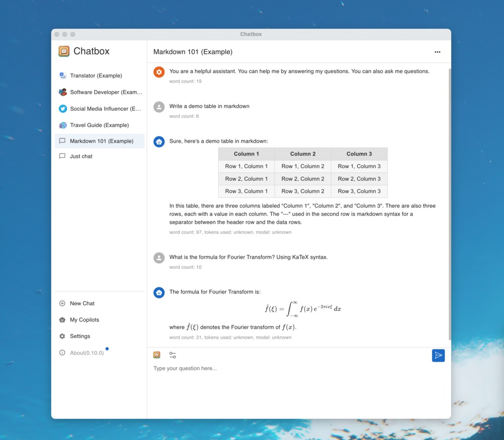
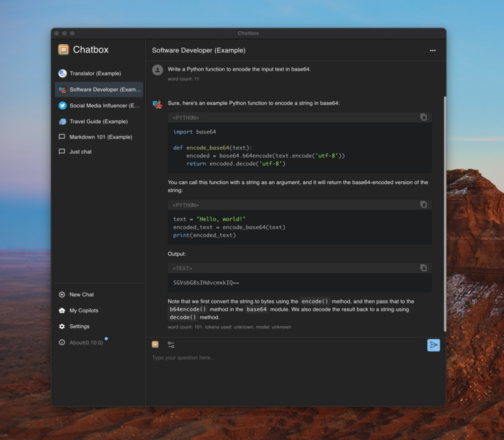

对应 Unbundled 分支同一版本号

English UI
English UI以上截图均为 Chatbox 官方原版界面（英文），用于说明界面结构与功能位置；汉化版已把对应文字替换为中文，布局保持不变。
Features / 原版功能
原版能做什么
Chatbox 把多家模型放进同一个桌面窗口：填入自己的 API Key 即可对话，资料与记录留在本机。下面按官方仓库的功能清单整理，括号内为原版界面上的英文名称。
- 多家模型（AI Provider）：OpenAI、Azure OpenAI、Claude、Google Gemini、Ollama 本地模型与 ChatGLM 等，按需选择提供商
- 本地知识库（Knowledge Base）：把文档收进本地知识库，让模型基于自己的资料回答，不需要上传到云端解析服务
- 文件问答（File Q&A）：直接拖入 PDF、Word、图片或代码片段，让模型读取、总结并提取信息
- 工具调用与联网搜索（Tool Calling / Web Search）：具体能力取决于所接入的模型与自建服务；Chatbox 官方的搜索与云端解析后端已在本分支中移除
- Copilot 与提示词（My Copilots / Prompt Library）：内置示例可离线浏览与搜索，自建 Copilot 与常用提示词保存在本地
- 排版与预览（Markdown / LaTeX / Code）：表格、公式、Mermaid 图与代码高亮直接排版，HTML 预览在本机运行
- 本地存储（Local Data Storage）：会话、设置与自建数据都留在本机，不经过 Chatbox 账户体系
- 跨平台桌面（Windows / macOS / Linux）：原版提供安装包，Windows 10 x64、macOS 11 与 Ubuntu 20.04 起可运行
Unbundled 分支移除了遥测、Chatbox AI 付费账户与托管模型、合作方后端以及非英文语言包，因此原版只有英文界面；本项目的汉化即在此基础上补回中文。
Release status / 版本状态
2.0.0：完整中文本地化版本。
Chatbox 中文汉化已发布，对应 Unbundled 分支同一版本号。桌面界面文字已替换为中文，布局、快捷键与本地数据格式保持原样。
发布说明
汉化版以 Unbundled 分支的英文界面为基准，只替换文字，不改动布局、快捷键与本地数据格式。原版已移除遥测与付费账户体系，所有配置与数据保存在本机；汉化在此基础上补回中文界面。遇到译文错漏或界面显示异常，请通过下方反馈入口告知。
Download / 获取方式
汉化安装包，直接下载。
希望打开就是中文界面，请下载汉化版安装包；需要对照原文或自行配置，请取官方原版（英文界面）。
01
下载安装包
汉化版 · 安装包
已内置中文桌面界面，双击安装并自动创建开始菜单项与卸载项，适合固定在一台机器上长期使用。
2.0.0 · Windows · 安装程序
02
前往官网
软件本体（未汉化）
metaory 维护的 Unbundled 分支，界面为英文，未作任何改动。需要对照原文、自行配置或使用 macOS / Linux，均以此版本为基础。
官方原始版本 · 未经修改
说明：汉化版仅提供 Windows 安装包；macOS 与 Linux 用户请取官方原版，界面为英文。
Specs / 规格
规格
- 软件
- Chatbox —— 免费、无遥测的桌面 AI 客户端（Unbundled 分支）
- 上游项目
- Chatbox Community Edition（chatboxai/chatbox）
- 形态
- 桌面应用（Electron + React），另提供网页版
- 平台
- Windows · macOS（Intel / Apple Silicon）· Linux（AppImage）
- 系统要求
- Windows 10 x64 · macOS 11 Big Sur · Ubuntu 20.04 及以上
- 模型接入
- OpenAI、Azure OpenAI、Claude、Google Gemini、Ollama、ChatGLM 等，使用自备 API Key
- 数据存储
- 会话、设置与自建 Copilot 均保存在本机
- 界面语言
- 中文（汉化版，已发布）· English（官方原版）
- 汉化状态
- 已发布，版本 2.0.0，安装包可在本页下载
- 许可证
- GNU GPL v3.0
关于原版 Chatbox
中文
Chatbox 是一款桌面 AI 客户端，Windows、macOS 与 Linux 均可运行。填入自己的 API Key 后，可以在同一窗口接入多家模型，配合本地知识库、文件问答与工具调用完成日常问答和写作；会话与设置默认保存在本机。
- 支持 OpenAI、Azure OpenAI、Claude、Google Gemini、Ollama 本地模型与 ChatGLM 等提供商
- Unbundled 分支移除了 Sentry、Plausible、Google Analytics 等遥测，以及 Chatbox AI 付费账户、许可证与计费体系
- 同时移除托管模型，以及内置搜索、云端知识库解析等合作方后端，只保留接入自有服务的用法（自备 API Key 或本地模型）
- 非英文语言包与语言选择器也被移除，因此原版为纯英文界面
- 桌面端提供 Windows、macOS（Intel / Apple Silicon）与 Linux AppImage 安装包，许可证 GNU GPL v3.0
English
Chatbox is a desktop AI client for Windows, macOS, and Linux. Bring your own API key to talk to multiple model providers in one window, with local knowledge bases, file Q&A, and tool calling; chats and settings stay on your device.
- Supports OpenAI, Azure OpenAI, Claude, Google Gemini, local models through Ollama, and ChatGLM.
- The Unbundled fork removes telemetry (Sentry, Plausible, Google Analytics, first-party click tracking), the Chatbox AI paid account, license keys, and billing.
- The hosted model provider and partner backends, including the built-in web search provider and cloud knowledge-base parser, are disabled; provider API calls use your own keys.
- Non-English locales and the language picker are removed, so the original interface is English-only.
- Desktop installers are available for Windows, macOS (Intel / Apple Silicon), and Linux AppImage. Licensed under GNU GPL v3.0.
介绍文案取自 chatbox-unbundled 官方仓库 README 与 Chatbox 官方站点，功能细节以该仓库为准